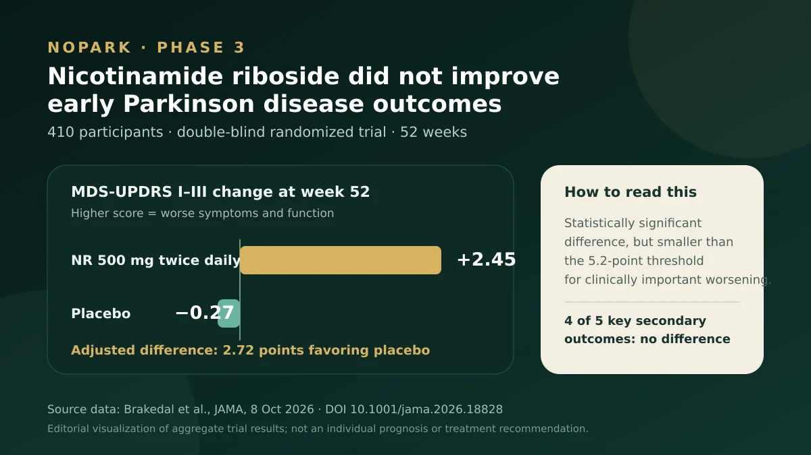

عکس و منبع · داده: Brakedal و همکاران؛ نمودار: وبسایت دکتر امید خیرخواهنیکوتینآمید ریبوزید پارکینسون را کند نکرد؛ نتیجهٔ کارآزمایی NOPARK
در یک کارآزمایی تصادفی فاز ۳ با ۴۱۰ فرد مبتلا به پارکینسون اولیه، مصرف یکسالهٔ نیکوتینآمید ریبوزید پیامدهای بالینی را بهتر نکرد و اختلاف اصلی اندکی به نفع دارونما بود؛ اما اندازهٔ این اختلاف از آستانهٔ تغییر بالینی مهم کوچکتر بود.
کارآزمایی تصادفی، دوسوکور، کنترلشده با دارونما و فاز ۳ در ۱۱ مرکز نروژ؛ شواهد مستقیم برای همین دوز، جمعیت و دورهٔ ۵۲هفتهای
مطالعهٔ کامل ۵ دقیقه مطالعه